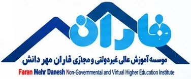

ساختار سازمانی
نمودار رسمی شامل حوزهٔ ریاست، معاونتها، مدیریت فنی و گروههای آموزشی است.
نمودار رسمی مؤسسه
درگاه دانشگاهی فاران · پروژهٔ سمینارخلاصهٔ منابع عمومی مؤسسهٔ فاران مهر دانش برای استفاده در پروژه. تاریخ، شرایط و جزئیات هر خدمت را از صفحهٔ رسمی مربوط بخوانید.
نمودار رسمی شامل حوزهٔ ریاست، معاونتها، مدیریت فنی و گروههای آموزشی است.
نمودار رسمی مؤسسهفهرست رشتهها از مقطع و گرایش هر برنامه خبر میدهد. تنظیم ترمبندی بر عهدهٔ مدیر گروه همان رشته است.
فهرست رشتهها · پرسشهای کارشناسی ارشددر اطلاعیهٔ مهر ۱۴۰۵، پس از ثبتنام الکترونیکی، وصول اصل مدارک و بررسی کامل بودن پرونده پیش از فعال شدن شمارهٔ دانشجویی قرار دارد.
اطلاعیهٔ مربوط به مهر ۱۴۰۵دانشجو و استاد مسیر ورود جدا دارند. راهنمای آزمون تحت نظارت از سایت مؤسسه در دسترس است.
پرتال دانشجو · پرتال استاد · راهنمای آزموناطلاعات شهریه و مستندات مربوط به دورهها، پایاننامه و پروژه از سایت مؤسسه قابل مراجعهاند.
جدول شهریه · مقررات مؤسسهمنابع عمومی پژوهش و دسترسی دیجیتال به آثار در دو بخش جدا منتشر شدهاند.
معاونت پژوهشی · کتابخانهٔ دیجیتال